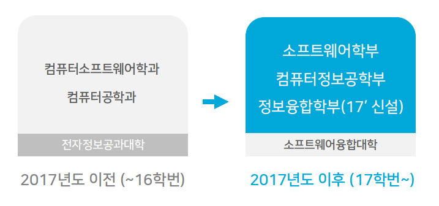
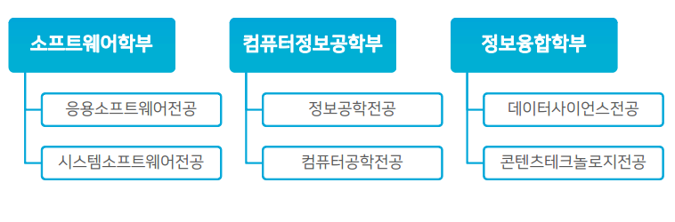
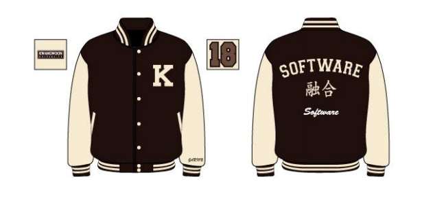

3. 학부 소개
소프트웨어융합대학의 학부 구성이 어떻게 되어 있나요?

기존의 전자정보공과대학 소속이었던 컴퓨터소프트웨어학과, 컴퓨터공학과를 전문성 있는 컴퓨터정보공학부(컴퓨터공학전공, 정보공학전공)와 소프트웨어학부(시스템소프트웨어전공, 응용소프트웨어전공)로 개편하였고 융합소프트웨어 분야 창의융합인재양성을 위해 정보융합학부(콘텐츠테크놀로지전공, 데이터사이언스 전공)가 신설되어 총 3개의 학부로 구성되어있습니다.
소프트웨어융합대학의 각 학부별 세부전공 구성이 어떻게 되어 있나요?

소프트웨어융합대학은 세 학부로 구성되어 있습니다!
소프트웨어학부는 응용소프트웨어전공과 시스템소프트웨어전공, 컴퓨터정보공학부는 정보공학전공과 컴퓨터공학전공, 정보융합학부는 데이터사이언스전공과 콘텐츠테크놀로지전공으로 이루어져있습니다.
소프트웨어융합대학의 학부 야구잠바 디자인이 궁금해요!

소프트웨어융합대학의 학부 야구잠바는 단과대학의 소속감을 고취시킬 수 있도록 각 학부별 영어 명칭을 제외하고 모두 동일한 디자인으로 진행하고 있습니다.